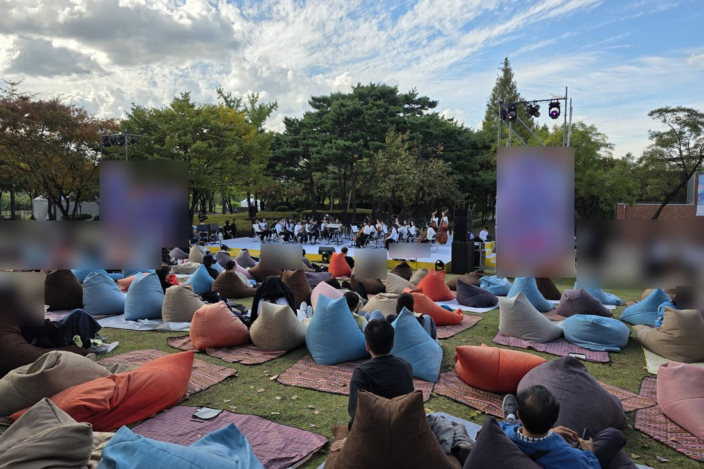

행사가 커질수록 인원 수보다 현장을 이끄는 사람이 중요합니다. 메이커팀은 단순히 사람을 모아 보내는 대신, 슈퍼바이저와 조장을 중심으로 경력 스태프를 묶어 프로젝트마다 운영팀을 꾸립니다. 행사 전에 교육과 배치를 마치고 세팅부터 철수까지 현장을 운영합니다.
이런 행사에 잘 맞아요
- 축제·문화행사
- 야외 공연
- 브랜드 팝업스토어
- 박람회·전시
팀 구성
- 슈퍼바이저: 현장 총괄
- 조장: 구역별 운영
- 경력 스태프: 세팅, 관객 안내, 부스 운영, 철수
진행 순서
- 행사 일정·장소·규모 확인
- 필요 인원과 역할 구성
- 인원 모집과 사전 교육
- 구역별 배치와 현장 운영
- 철수
자주 묻는 질문
인원이 급하게 필요할 때도 되나요?
날짜와 장소, 필요한 인원을 알려 주시면 가능한 인원을 바로 확인해 드립니다.
세팅과 철수도 맡나요?
네. 행사 전 세팅부터 운영, 철수까지 같은 팀이 맡습니다.
진행요원만 따로 구할 수도 있나요?
네. 등록 데스크나 좌석 안내처럼 필요한 역할만 골라 구성할 수 있습니다.